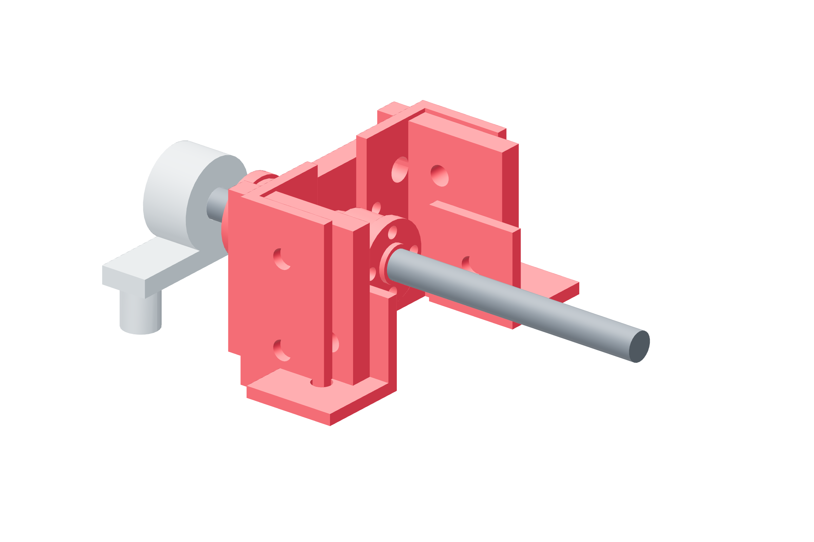

Screw drives / six copies46 / 179
Build the metal thrust stack
The bulkhead and two opposed thrust bearings retain the screw axially. The radial housing guides it; the printed pulley and cover carry no thrust preload.
AddPer drive: drive-bulkhead · 2 F8-16M · 2 TR8×2 fixed nuts · 10 M10 steel washers · Loctite 243
Tools / setupHand wrenches · soft screw support · axial movement check

- Trial-fit one nut, five M10 washers, complete thrust bearing, bulkhead, opposite complete bearing, five washers and second nut in CAD order.
- Measure both five-washer stack lengths; seat the correct shaft/house races on metal. Bring axial clearance out without adding a tight spot.
- Clean and dry the retention threads, apply Loctite 243 according to its label and restore the proven axial adjustment.
- Allow the governed 24-hour cure before transmitting torque; add witness lines across both nut/screw joints.
Ready when
After cure, the screw turns fully without binding or visible axial movement, and both witness-marked nuts remain fixed to it. A moving nut, incomplete cure, rubbing brass body or binding race fails axial retention. Support the screw and rebuild that measured metal stack before loading it.